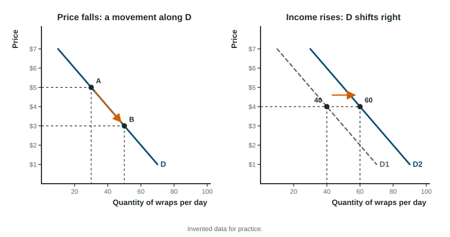

A coffee shop near campus cuts its iced latte from $5 to $4 for exam week, and the line runs out the door. A month later a bubble tea shop opens next door, and the coffee shop sells fewer lattes even at $4. Both stories are about demand. The first is a movement along the demand curve; the second shifts the whole curve. Telling them apart is the most tested skill in this unit.
What demand is
Demand is the whole list of quantities buyers are willing and able to buy at each possible price, holding everything else the same. One number on that list, the amount wanted at one price, is the quantity demanded. Drawn on a graph with price on the vertical axis and quantity on the horizontal axis, demand is a curve that slopes down, labeled D.
Demand needs both parts: willing and able. A student who would love a $900 laptop but has $200 is not part of demand at $900. Buyers respond to incentives, such as a lower price, inside their constraints: their income, their time, and the law. Markets also need clear ownership. When property rights are well defined, a buyer knows that what she pays for is hers to use or resell, so trading is worth doing.
The law of demand and why it holds
The law of demand: other things equal, when the price of a good rises, the quantity demanded falls, and when the price falls, the quantity demanded rises. Three ideas explain it.
- Substitution effect. When chicken costs more, it is more expensive compared with beans, fish and tofu, so buyers switch some meals to those.
- Income effect. A higher price means a buyer's income buys less in total, so she can afford less of the good.
- Diminishing marginal utility. Each extra unit adds less satisfaction than the one before, so a buyer will take another unit only if the price falls.
A movement along the curve or a shift

A change in the good's own price moves buyers along the same curve, from one point to another. Economists call that a change in quantity demanded. Anything else that changes how much buyers want at every price shifts the whole curve: a change in demand. An increase in demand shifts the curve right (more is wanted at each price); a decrease shifts it left. On a graph, keep the first curve, label it D1, draw the new curve D2 and add an arrow.
The determinants of demand
| Determinant | Change | Demand |
|---|---|---|
| Tastes and preferences | A study says the good is healthy | shifts right |
| Income, normal good | Income rises | shifts right |
| Income, inferior good | Income rises | shifts left |
| Price of a substitute | Bus fares rise (for scooter rentals) | shifts right |
| Price of a complement | Ink gets dearer (for printers) | shifts left |
| Expectations | Buyers expect a higher price next month | shifts right now |
| Number of buyers | The town's population grows | shifts right |
A normal good is one buyers want more of when their income rises (restaurant meals, new clothes). An inferior good is one they want less of when their income rises, because they can now afford something they prefer (instant noodles, the bus for someone who buys a car). Substitutes are used in place of each other; complements are used together.
Market demand: add across
Market demand is the sum of every individual buyer's demand. You add the quantities at the same price, so the market curve is the horizontal sum of the individual curves.
Worked example: from three buyers to a market. At a gym cafe, Ana, Ben and Cai would buy these smoothies per week (invented data):
| Price | Ana | Ben | Cai | Market |
|---|---|---|---|---|
| $2 | 6 | 4 | 5 | 15 |
| $3 | 5 | 3 | 4 | 12 |
| $4 | 4 | 2 | 2 | 8 |
| $5 | 3 | 1 | 0 | 4 |
- Add across each row. At $4: smoothies.
- Own price falls from $4 to $3. The market quantity demanded rises from 8 to 12: a movement along market demand.
- A fourth buyer joins who wants 3 at each price. Every market quantity rises by 3 (18, 15, 11, 7): market demand shifts right.
Add quantities, never prices. Adding the three prices or averaging the quantities gives a number that means nothing.
On the exam
When a question describes a change, ask one question first: is this the good's own price? If yes, write "quantity demanded changes" and move along the curve. If no, find the determinant, decide the direction, and shift the curve. Say "demand increases" only for a shift.